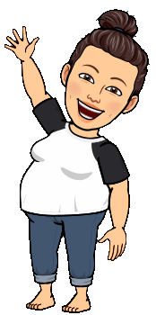

Cassandra
Türkis wie das Wasser und das durchgehende Farbschema meiner bisherigen Aufgaben.
Einsendeaufgabe 6
Vier kleine Erinnerungsperlen bewegen sich gemeinsam durch einen großen Unterwasserring. Jede Perle hat ihre eigene Farbe und Bedeutung.

Bewegte WebGL-Szene
Die vier Perlen bewegen sich auf einer gemeinsamen Kreisbahn. Dabei fliegen sie nacheinander durch die Öffnung des Torus, ohne sich gegenseitig zu berühren.
WebGL wird vorbereitet …
Bewege alle vier Perlen schrittweise oder starte die automatische Animation.
Bewegung wird vorbereitet …
Der Torus dreht sich synchron mit den Perlen um mehrere Achsen. Dadurch bewegt er sich nicht nur wie ein Autoreifen.
Torusdrehung ist eingeschaltet.
Persönliche Farbwahl
Die vier Kugeln haben nicht nur unterschiedliche Farben. Jede von ihnen steht für jemanden, der zu meinem Leben und damit auch zu meiner kleinen Unterwasserwelt gehört.
Türkis wie das Wasser und das durchgehende Farbschema meiner bisherigen Aufgaben.
Rosa als warme und freundliche Farbe innerhalb der gemeinsamen Kreisbahn.
Sandfarben passend zum Meeresboden und zu ihrem hellen Fell.
Dunkelblau mit einem warmen Goldton als kleine Erinnerung, die weiterhin mit uns reist.
Informationen zur Umsetzung
Wie die Kreisbahnen, die Objektbewegung und die synchrone Drehung entstanden sind.
Für diese Aufgabe wollte ich meine Unterwasserwelt weiterführen. Aus den vier vorgegebenen Kugeln wurden deshalb vier Erinnerungsperlen, die gemeinsam durch einen großen Meeresring fliegen.
Die unterschiedlichen Farben machen die Kugeln gut erkennbar und geben der technischen Aufgabe gleichzeitig eine persönliche Bedeutung.
Alle Perlen bewegen sich auf derselben Kreisbahn. Ihre Positionen werden mit Sinus und Kosinus aus einem gemeinsamen Winkel berechnet.
Jede Perle beginnt um 90 Grad versetzt. Dadurch bleiben die Abstände während der gesamten Bewegung gleich und die Kugeln berühren sich nicht.
In Aufgabe 5 wurde die Kamera um eine feste Szene bewegt. Diesmal bleibt die Kamera an ihrer Position, während sich die Kugeln innerhalb der Szene bewegen.
Dafür erhält jede Kugel eine eigene Modelltransformation. Die berechnete Position wird auf die jeweilige Model-Matrix übertragen.
Der Torus dreht sich synchron zur Bewegung der Perlen. Dabei wird er um mehr als eine Achse gedreht und bewegt sich deshalb nicht nur wie ein Autoreifen.
Die Öffnung des Torus und die Größe der Perlen sind so gewählt, dass die Kugeln den Ring während ihrer Bewegung nicht berühren.
Grundlage für die Modelltransformationen und die Bewegung der Objekte war die Lerneinheit TFM des Kursmaterials.
Ergänzend habe ich die Erklärung zur Rotation bei WebGL Fundamentals verwendet.
Die Bedienung mit Buttons und Tastatur, die automatische Animation und die Torusdrehung wurden in Google Chrome getestet. Zusätzlich wurde die Entwicklerkonsole auf Fehlermeldungen geprüft.
Die Webseite ist Schritt für Schritt in Visual Studio Code entstanden und wurde während der Umsetzung mehrfach an meine Gestaltungsidee angepasst. Bei einzelnen Fragen zur Seitenstruktur, zu JavaScript und bei der Fehlersuche habe ich ergänzend ein KI-gestütztes Sprachmodell genutzt. Verwendete Hinweise habe ich nachvollzogen, selbst angepasst und anschließend in der fertigen Anwendung getestet.
Die Szene wurde mit HTML, CSS, JavaScript und WebGL umgesetzt. Meeresboden, Torus und Kugeln werden als einzelne Modelle verwaltet.
Die Model-Matrizen enthalten Skalierung, Rotation und Verschiebung. Anschließend werden sie mit der View- und Projektionsmatrix kombiniert und im Shader auf die Vertices angewendet.
Die Aufgabe baut auf den technischen Grundlagen meiner vorherigen Einsendeaufgaben auf. Vorhandene Funktionen für WebGL, Shader, Kamera, Matrizen und die Kugelgeometrie habe ich erneut verwendet und für diese Szene angepasst. Neu hinzugekommen sind die getrennten Model-Matrizen der vier Perlen, ihre um jeweils 90 Grad versetzten Kreisbahnen, die automatische Animation, die Gitterebene und die synchrone Drehung des Torus. Ich habe bewusst keine zusätzliche 3D-Bibliothek eingesetzt. Deshalb werden Geometrien, Matrizen und Transformationen direkt im JavaScript berechnet. Zusammen mit den ausführlichen Kommentaren und der gut lesbaren Formatierung fällt die Datei entsprechend umfangreicher aus.
Entstehungsprozess
Die Screenshots zeigen, wie aus den ersten Grundformen die fertige bewegte Szene entstanden ist.